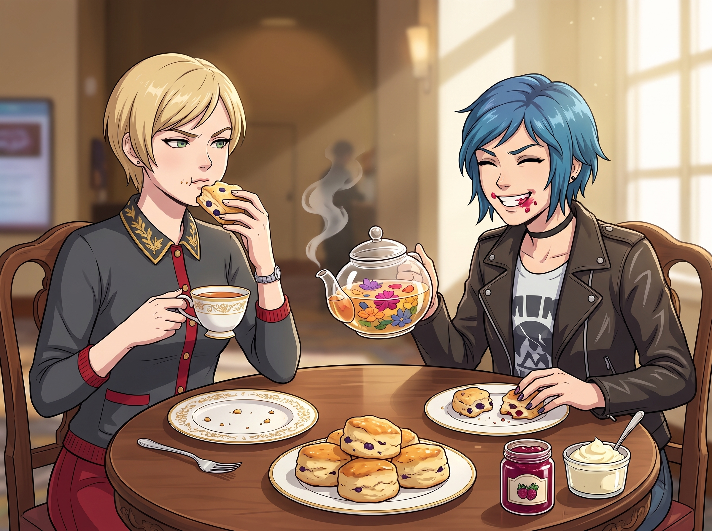

下午茶階級對決

一、坐下休戰
追打鬧劇結束後,四人在天台中央那張舊木桌旁坐下,渾身狼狽,卻也難得地聚在一起,展開了關於「吃什麼」的靈魂拉鋸戰。
二、鈔能力名媛下午茶
Victoria 率先拿出手機,一臉理所當然地準備打電話給西雅圖的法式甜點店。
「直升機配送,」她語氣裡帶著不容置疑的堅定,「要三層銀質托盤、魚子醬小鹹點、司康餅配凝塊奶油,還有大吉嶺初摘紅茶。」
Chloe 翻了個白眼,毫不客氣地打斷她。
「算了吧大小姐,」她說,「那些東西一口下去,除了糖分就是階級優越感,塞牙縫都不夠。」
三、民工級高熱量轟炸
Chloe 也不甘示弱,掏出那張皺巴巴、油漬斑斑的碼頭外賣單。
「叫兩大桶油炸洋蔥圈,」她一臉認真地規劃著,「超大份辣肉醬熱狗,再加一箱塑膠瓶裝根汁汽水,吃了保管精神百倍。」
Victoria 當場嫌棄地捏住鼻子,語氣裡帶著毫不掩飾的威脅。
「如果妳敢讓那些地溝油的味道飄進這個溫室,」她冷冷地說,「我立刻買下這棟樓,把妳的皮卡車吊進海裡。」
兩人隔著木桌你一言我一語,爭得面紅耳赤,誰都不肯讓步。
四、悄悄退場的兩人
爭吵正激烈時,Kate 和 Max 沒有加入戰局,只是對視一眼,默默起身,走向天台角落那個小廚房和花草架。
Kate 拿著小剪刀,熟練地剪下幾株剛才微距拍攝過的新鮮洋甘菊、薄荷葉,還有幾朵可食用的三色堇。
Max 則在旁邊幫忙燒開水,磨碎老式鐵罐裡那包粗製紅茶葉,又把 Kate 昨晚親手烤好的自製燕麥藍莓司康,整齊碼放在一個乾淨的木質托盤上,旁邊擺上一小罐 Kate 奶奶親手熬製的野草莓果醬。
五、神仙茶點降臨
當那壺熱氣騰騰、漂浮著新鮮花瓣的玻璃茶壺,連同那盤散發著天然麥香的烤餅端上桌時,還在爭執不休的 Chloe 和 Victoria,雙雙瞬間閉了嘴。
六、真香現場
Victoria 率先抿了一口那杯清冽甘甜的花草茶,又小心翼翼地咬了一小口外酥裡嫩的藍莓司康。
「黃油打發得,」她斟酌著詞句,語氣裡帶著挑剔的矜持,「稍微有點過度。」
話雖如此,她的手卻異常誠實,不到兩分鐘,就把整塊司康吃得一乾二淨,連渣都沒剩下。
Chloe 那邊更加豪邁——她一口氣吞了兩個司康,抹了一把嘴角沾到的果醬,咧嘴大笑。
「雖然沒有肉,」她心滿意足地感嘆,「但 Kate 做的小點心,確實比老媽烤的硬麵包好吃一百倍。」
七、定格的夕陽
天台的木桌上,擺著那壺帶著花香的自製茶點、那本被 Chloe 惡搞卻意外充滿生活氣息的植物圖鑑,還有一台正在定時倒數的拍立得相機。
「咔嚓」一聲響起的瞬間,四個人擠在同一張長凳上——Victoria 雖然還在翻著白眼,卻沒有推開靠在自己肩上的 Kate;Chloe 咬著半塊司康,把手隨意搭在 Max 頭頂;Max 對著鏡頭,露出了這一天裡最燦爛的笑容。
所有的階級隔閡、校園陰霾與混亂,在這壺溫暖的花草茶裡,悄悄地、徹底地化解開來。
風輕輕吹過天台,帶著薰衣草和洋甘菊交織的香氣,遠處阿卡迪亞灣的海面上,夕陽正緩緩沉入海平線,把這四個曾經各自站在不同世界裡的女孩,連同她們此刻並肩而坐的身影,一同染上了一層溫柔的金色。